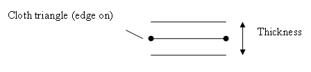

Cloth Parameters
Cloth parameters may be specified during cloth creation, using
members of the NxClothDesc, or after creation using
members of NxCloth.
Flags
NxClothDesc::flags
or
NxCloth::setFlags()
The following flags may be used:
- NX_CLF_PRESSURE - Enables internal pressure for closed cloth meshes. See cloth pressure.
- NX_CLF_STATIC - Disables integration/simulation of the cloth. For
example, a piece of cloth can be created in an authoring tool and
simulated for awhile to achieve the desired effect, then made static
to avoid the simulation overhead of continually simulating the cloth.
This could be useful in making a tablecloth
seem real. Simulation for the cloth could be enabled again if
the player comes into contact with the table.
- NX_CLF_DISABLE_COLLISION - Disables collision detection between
the
cloth and other objects.
- NX_CLF_VISUALIZATION - Enables visualizations, displays cloth
points,
attachment deviation from attachment points, etc. At present,
visualization is only intended for internal use.
Available visualizations may change.
- NX_CLF_GRAVITY - Enables application of the scene gravity. To set
the gravity, change the appropriate SDK
parameter.
- NX_CLF_BENDING - Enables bending constraints. Must be set to
enable
ortho bending (in addition to NX_CLF_BENDING_ORTHO).
- NX_CLF_BENDING_ORTHO - Applies a more robust/realistic bending
constraint. When ortho bending is not enabled, the SDK applies bending
constraints based on the distance between the two points either side of
an edge. When ortho bending is enabled, the constraint is computed based
on the actual angle between the two triangles either side of the edge.
- NX_CLF_DAMPING - Enables damping on individual cloth particles.
- NX_CLF_COMDAMPING - Only effective if NX_CLF_DAMPING is set. Excludes the center of mass of the cloth
from damping, making the cloth damping local instead of global.
- NX_CLF_COLLISION_TWOWAY - Applies the cloth's force on rigid bodies (e.g., a cloth could pull a rigid body).
- NX_CLF_TEARABLE - Enables Cloth Tearing.
- NX_CLF_HARDWARE - Directs the cloth to be simulated in hardware (flag has no effect after creation).
- NX_CLF_SELFCOLLISION - Enables self collision handling within a single piece of cloth.
- NX_CLF_VALIDBOUNDS - Enables valid bounds for this cloth.
Bending Stiffness
NxClothDesc::bendingStiffness
or
NxCloth::setBendingStiffness()
Bending stiffness defines the strength of the constraint that stops
the
triangles on either side of an edge from rotating. A
value of one will produce a very stiff material, such as cardboard, while a value near zero will
produce one which can bend very easily, like paper.

Stretching Stiffness
NxClothDesc::stretchingStiffness
or
NxCloth::setStretchingStiffness()
Stretching stiffness defines the strength of the constraint along a
triangle edge that maintains the distance between the
edge end points. A
value of one will produce a cloth that is very difficult to stretch, such as denim pants, while a value near zero will
produce one that can stretch easily, like nylon stockings (a value too near zero is not recommended for a stable
simulation; zero is not allowed).
Density
NxClothDesc::density
NOTE: Density can only be specified when creating a cloth.
Density indirectly specifies the mass of the cloth particles. The mass of a
particle is calculated as the sum of the following equation (for triangles sharing a point):
1/3 * triangleArea * density
Thickness
NxClothDesc::thickness
or
NxCloth::setThickness()
Thickness defines the triangle's level of thickness for collision detection, improving its robustness. Setting the thickness very low is not recommended
as this will lead to poor collision handling.

Damping
NxClothDesc::damping
or
NxCloth::setDampingCoefficient()
Controls how much damping is applied to the
motion of cloth particles. Damping is always performed for the
velocity of each individual particle.
If the NX_CLF_COMDAMPING flag is specified, the global rigid body modes (translation and rotation) are
exempted from damping. If not, the global translation and rotation of the cloth are damped, same as
the internal movement of the cloth.
Solver Iterations
NxClothDesc::solverIterations
or
NxCloth::setSolverIterations()
The solver iteration count controls how accurately the cloth is
simulated. When simulating cloth, the SDK uses an iterative approach to
enforce the cloth constraints - the higher the iteration, the better the result. However, more
iterations are more expensive. Plus, there is a top-off point where applying
more does not yield a noticeable gain in accuracy. A typical
count for a cloth is 5 iterations.
Attachment Response Coefficient
NxClothDesc::attachmentResponseCoefficient
or
NxCloth::setAttachmentResponseCoefficient()
This coefficient controls the strength of the momentum transfer between a cloth and the
shape(s) it is attached to. A large attachment response coefficient
will cause the cloth to pull/push the body more easily and a lower
value will mean the rigid body is more difficult to move.
See Cloth Attachments for details
on how to attach a cloth to a rigid body.
Collision Response Coefficient
NxClothDesc::collisionResponseCoefficint
or
NxCloth::setCollisionResponseCoefficient()
The collision response coefficient is similar to the attachment
response coefficient, except instead of applying forces due to the
attachment, it applies forces due to collision.
The collision response coefficient only has an affect if both collisions and two way interactions are
enabled (i.e., the CVF_COLLISION flag and
the NX_CLF_COLLISION_TWOWAY are both set).
Friction
NxClothDesc::friction
or
NxCloth::setFriction()
The friction parameter controls the frictional response of cloth and
rigid body contacts. A
high friction parameter will cause more friction between a cloth and its rigid body contact, while a low friction parameter will
result in a cloth that easily slides along a surface.
External Acceleration
NxClothDesc::externalAcceleration;
or
NxCloth::setExternalAcceleration
An external acceleration can be applied to a cloth to simulate
different effects. The force is applied to each vertex that is not attached to an object.
Interesting effects can be achieved at relatively little cost by varying the externalAcceleration over time.
Wind Acceleration
NxClothDesc::windAcceleration;
or
NxCloth::setWindAcceleration
As with external acceleration this applies an acceleration on each vertex. However this acceleration
is only applied in the vertex normal direction, i.e. only the component of the external force that
lies in the direction of the vertex normal is applied to the vertex. This makes it easy to simulate
effects such as wind.
Valid bounds
By using valid bounds, activated by the NX_CLF_VALIDBOUNDS flag, you can specify an axis-aligned bounding volume
to which the cloth is restricted. Any part of the cloth that leaves this volume (such as pieces torn off an otherwise
attached flag) will be removed from the simulation.
API Reference
Copyright © 2008 NVIDIA Corporation, 2701 San Tomas Expressway, Santa Clara, CA 95050 U.S.A. All rights reserved. www.nvidia.com